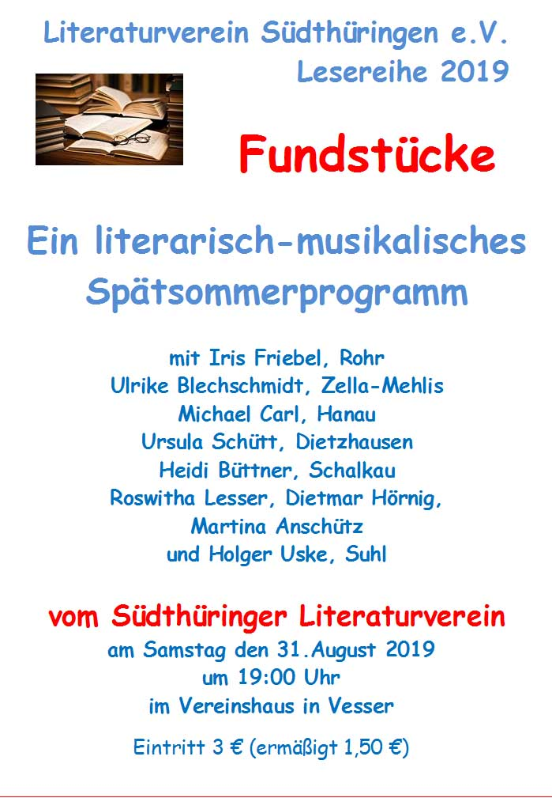

Suhl. Die Schreibgruppe „Zeilensprung" im Südthüringer Literaturverein veranstaltet am Wochenende 31. August / 1. September 2019 zum vierten Mal eine Literaturwerkstatt im Suhler Ortsteil Vesser. Am Samstag, dem 31. August 2019, bieten sie ab 19:00 Uhr im Vereinshaus „Vesserblick" eine Spätsommerlesung an, die unter den Titel „Fundstücke" steht und eine breite Palette eigener Texte bietet. Zu hören sind Erzählungen und Gedichte, Anekdoten und Fabeln sowie Lieder – „Fundstücke" aus und für Thüringen.
Unter dem Motto „Sommerfrisches Vesser" versammeln sich etwa 10 Autorinnen und Autoren aus der Region, darunter „Zeilensprung"-Chefin Ulrike Blechschmidt, Ursula Schütt, Martina Anschütz, Dietmar Hörnig und Holger Uske, um an neuen Texten zu arbeiten. Diese und weitere Teilnehmer werden ihre Ergebnisse dann am Samstagabend einem interessierten Publikum vorstellen. Dabei sein werden neben den genannten Autoren auch Heidi Büttner aus Schalkau, Iris Friebel aus Rohr, Roswitha Lesser aus Suhl und der Ex-Suhler Michael Carl.
Die Veranstaltung läuft im Rahmen der „Lesereihe 2019" des Südthüringer Literaturvereins. Der Eintritt beträgt 3 €, Schüler und Studenten ermäßigt 1,50 €.
